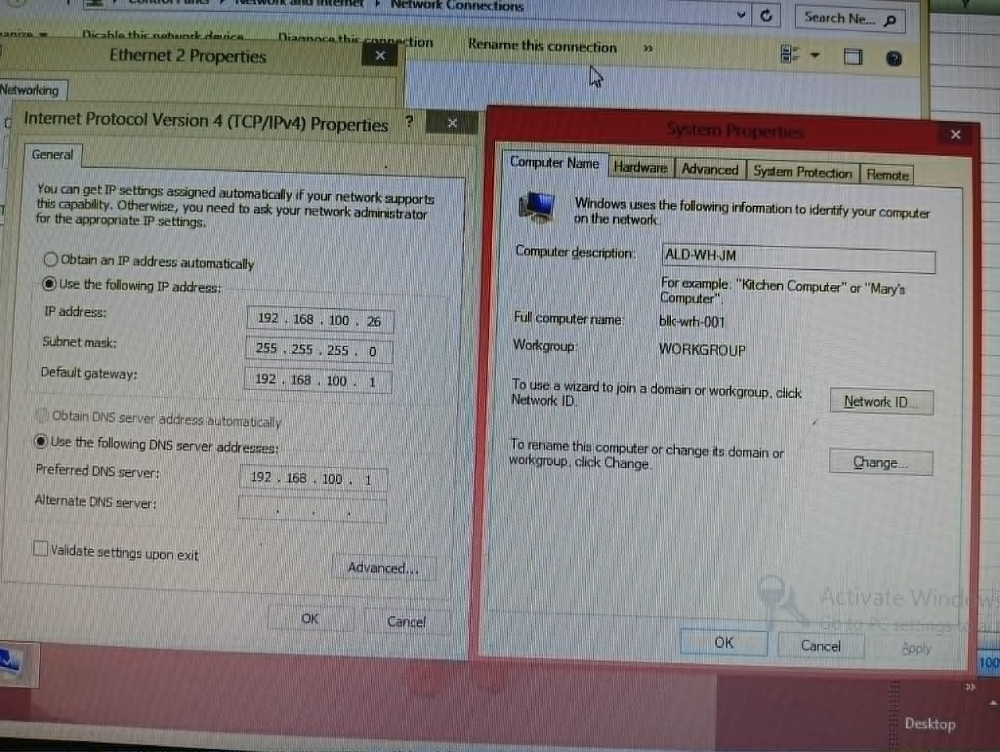
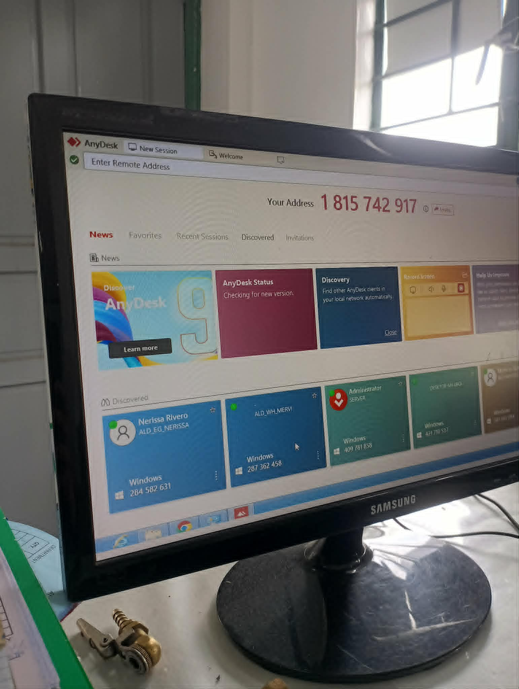
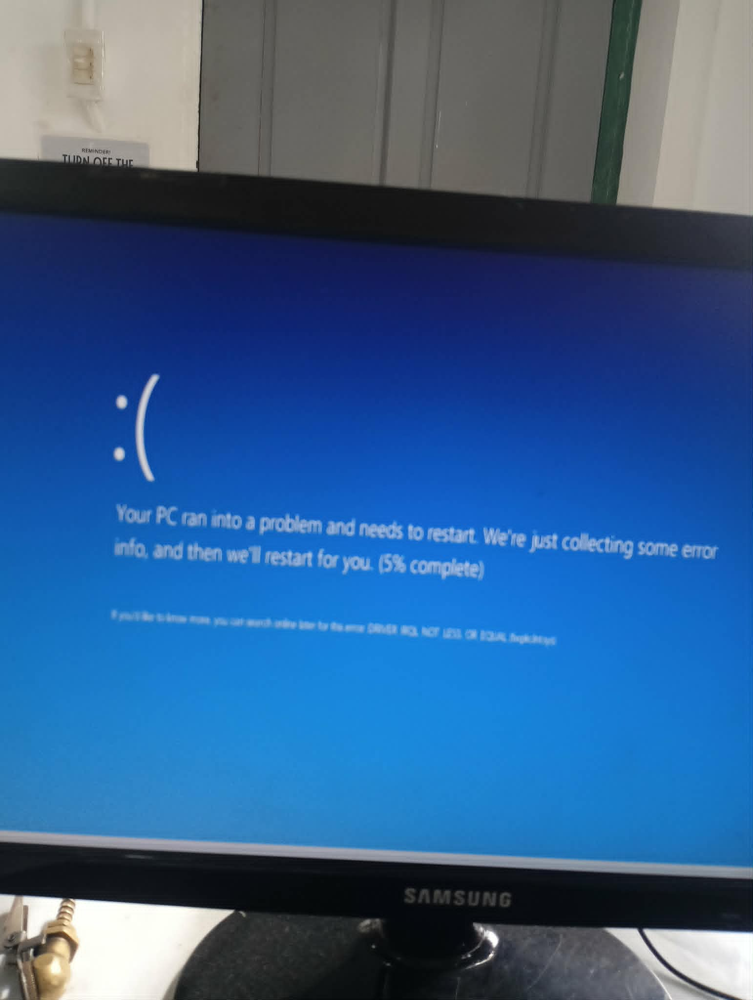
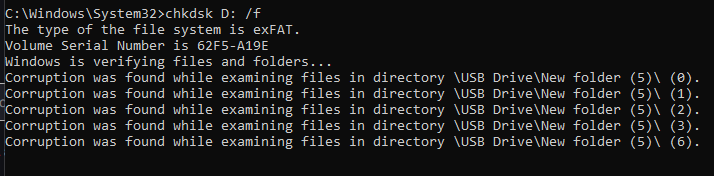
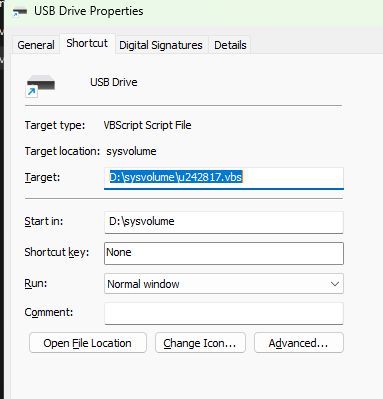
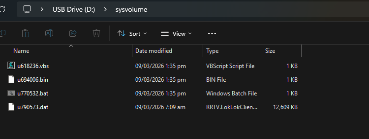
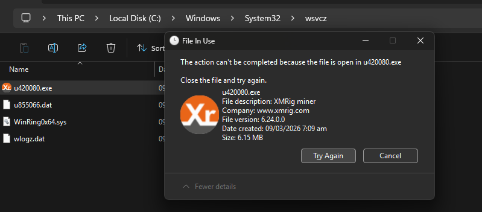
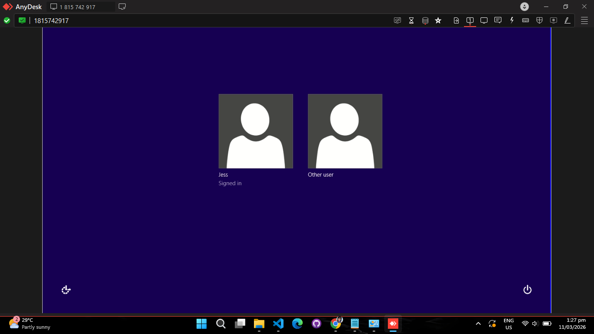
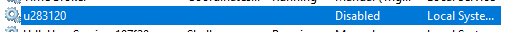

Narrative
Week 4 began on March 9 with a critical issue — a flash drive that had been corrupted and required data restoration. After successfully recovering the files, I encountered a problem when attempting to transfer the restored data back to the flash drive. The flash drive appeared corrupted, showing only shortcuts instead of the actual files. This was a classic case of a shortcut virus — a form of malware that hides files and replaces them with shortcuts, making it appear as though the data has been lost.
Rather than pursuing surface-level solutions, I took a
methodical approach to troubleshooting. First, I showed
hidden files on the flash drive by using the attrib
-h -r -s /s /d E:\*.* command. However, the files
remained inaccessible. I then researched multiple locations
to isolate where the virus might be hiding. The breakthrough
came when I checked Windows Services Manager (services.msc),
where I discovered a strange application that had been
running in the background. After locating its file path, I
was able to isolate and remove it. Once terminated, the
shortcut virus was completely gone, and the files were
accessible.
Day 10 shifted focus to network infrastructure and Active Directory management. We joined Sir Jess's desktop to the company domain. During this session, our mentor Sir Jhong provided valuable instruction on Active Directory Users and Computers, explaining its critical role in managing permissions across departments.






On March 11, we continued the domain joining process using
proper sequencing: renaming the computer first, restarting,
and then joining it to the domain. After specifying the DNS
as 192.168.100.26,
we ran into an SRV timeout error via nslookup.
To resolve this, I disabled IPv6, configured the DNS Suffix
manually, executed ipconfig
/registerdns, and successfully joined the machine
to the domain.
March 12 was a preparation day for an important company event. The company was preparing for a management review meeting, which meant setting up projection hardware. Meanwhile, I continued working on preparing the QR Code System.








By March 14, the QR Code System for Inventory proposal was officially approved by management. The platform utilizes QR.me for generating dynamic codes. My focus shifted to organizing the detailed inventory specifications that would be embedded in each code. This was an excellent demonstration of leveraging external robust platforms rather than building features blindly from scratch.